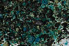

|
|
(For further information on spectroscopy, see:
http://speclab.cr.usgs.gov)
TITLE: Pitch_Limonite GDS104 Cu DESCRIPT
DOCUMENTATION_FORMAT: MINERAL
SAMPLE_ID: GDS104
MINERAL_TYPE: Hydroxide
MINERAL: Pitch Limonite
FORMULA: [H(Cu,Fe)O2]
FORMULA_HTML: [H(Cu,Fe)O2]
COLLECTION_LOCALITY: Yerrington, NV
ORIGINAL_DONOR: Bill Atkinson, Univ. of Colorado, Boulder
CURRENT_SAMPLE_LOCATION: USGS Denver Spectroscopy Laboratory
ULTIMATE_SAMPLE_LOCATION: USGS Denver Spectroscopy Laboratory
SAMPLE_DESCRIPTION:
IMAGE_OF_SAMPLE:

END_SAMPLE_DESCRIPTION.
XRD_ANALYSIS:
45 kV - 35 mA, 7.3-9.5 keV
File: plimo104.out, -.mdi
References: All JCPDS entries for iron oxides-hydroxides-hydrates;
Huebner's reference patterns.
Found: not identified
Comment: 4 very weak, very broad reflections at 2.9, 2.6, 1.6, and 1.5 Angstroms. Not much crystallinity.
J.S.Huebner, J. Pickrell, T. Schaefer, written communication 1994
END_XRD_ANALYSIS.
COMPOSITIONAL_ANALYSIS_TYPE: None # XRF, EM(WDS), ICP(Trace), WChem
COMPOSITION_TRACE:
COMPOSITION_DISCUSSION:
Bill Atkinson believes that this sample contains significant Cu
replacing Fe in the goethite.
It is not unusual for goethite to be X-ray amorphous. See Swayze et
al., Using imaging spectroscopy to map acidic mine waste,
Environmental Science and Technology, v. 34, p. 47-54, 2000.
END_COMPOSITION_DISCUSSION.
MICROSCOPIC_EXAMINATION:
END_MICROSCOPIC_EXAMINATION.
SPECTROSCOPIC_DISCUSSION:
END_SPECTROSCOPIC_DISCUSSION.
SPECTRAL_PURITY: 1?2_3_4_ # 1= 0.2-3, 2= 1.5-6, 3= 6-25, 4= 20-150 microns
| LIB_SPECTRA_HED: | where | Wave Range | Av_Rs_Pwr | Comment |
|---|---|---|---|---|
| LIB_SPECTRA: | splib04a r 3926 | 0.2-3.0µm | 200 | g.s.= |
| LIB_SPECTRA: | splib05a r 5460 | 0.2-3.0µm | 200 | g.s.= |
| LIB_SPECTRA: | splib06a r 17952 | g.s.= |
{kind=link}